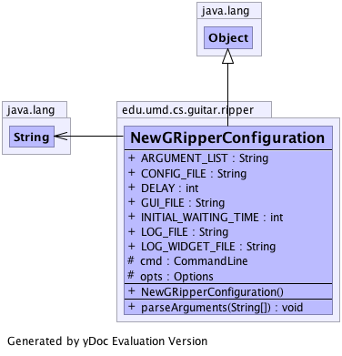

edu.umd.cs.guitar.ripper
Class NewGRipperConfiguration
java.lang.Object
 edu.umd.cs.guitar.ripper.NewGRipperConfiguration
edu.umd.cs.guitar.ripper.NewGRipperConfiguration
public class NewGRipperConfiguration
- extends java.lang.Object
Generated by yDoc Evaluation Version
-
-

| Methods inherited from class java.lang.Object |
clone, equals, finalize, getClass, hashCode, notify, notifyAll, toString, wait, wait, wait |
opts
protected org.apache.commons.cli.Options opts
cmd
protected org.apache.commons.cli.CommandLine cmd
GUI_FILE
public java.lang.String GUI_FILE
LOG_FILE
public java.lang.String LOG_FILE
LOG_WIDGET_FILE
public java.lang.String LOG_WIDGET_FILE
CONFIG_FILE
public java.lang.String CONFIG_FILE
DELAY
public int DELAY
ARGUMENT_LIST
public java.lang.String ARGUMENT_LIST
INITIAL_WAITING_TIME
public int INITIAL_WAITING_TIME
NewGRipperConfiguration
public NewGRipperConfiguration()
parseArguments
public void parseArguments(java.lang.String[] args)
throws org.apache.commons.cli.ParseException
- Throws:
org.apache.commons.cli.ParseException